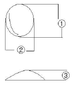
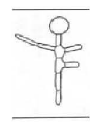

수산양식산업기사 (2005-08-07 기출문제)
1과목: 어류양식
1. 다음 중 초어류의 원산지는?
- 대만
- 일본
- 필리핀
- 중국
(정답률: 60%)

2. 은연어의 해수사육에 관한 설명중 틀린 것은?
- 해수에서의 성장이 빠르다.
- 3일 정도의 순치기간을 가진다.
- 순치기간 중멱이는 소량씩 준다.
- 살의 붉은색 강화를 위해 먹이에 새우류를 섞여 먹인다.
(정답률: 50%)
3. 다음 배합사료 원료중 송어 양식에 사료의 단백질원으로 널리 그리고 가장 유용하게 사용되는 것은?
- 백색어분
- 갈색어분
- 번데기
- 콩깻묵 가루
(정답률: 62%)
4. 현재 뱀장어 종묘생산 시 종묘를 구하는 방법 중 주로 사용되는 것은?
- 바다에서 하천으로 소상하는 것을 채포 사용하는 방법
- 자연 채란에 의한 방법
- 인공 채란에 의한 방법
- 근도식 방법에 의한 채란 방법
(정답률: 85%)
5. 다음중 틸라피아에 관한 사항으로 맞지 않는 것은?
- 아프리카 동해안이 원산지이나 우리나라에서는 태국에서 처음 수입하였다.
- Tiiapia속, Sarotherodon속, Oreochromis속 의 세가지 속으로 분류되어진다.
- 채색은 환경에 따라 변화가 심하다.
- 산란은 30℃이상에서만 이루어진다.
(정답률: 100%)
6. 다음 어류 중 일반적으로 인공 채란 방법으로 채란하지 않는 것은?
- 초어
- 연어
- 송어
- 방어
(정답률: 67%)
7. 다음 중 은어의 성육장으로 가장 좋은 지반은?
- 암초
- 자갈
- 사니질
- 니질
(정답률: 86%)
8. 무지개송어의 1회에 주는 먹이의 양은 포식하는 양의 몇 %가 적당한가?
- 10 ~ 20%
- 30 ~ 50%
- 60 ~ 80%
- 90 ~ 100%
(정답률: 58%)
9. 가두리 양어장의 적지는?
- 빈영양호
- 중영양호
- 부영양호
- 소형저수지
(정답률: 70%)
10. 다음 해산어류인 복어, 방어, 참돔 중 공통점이 아닌 것은?
- 온수성 어족이다.
- 양식 종묘는 천연종표에 의존한다.
- 생사료이 원료로 멸치, 까나리 등을 이용한다.
- 성장별 채색변화가 있다.
(정답률: 58%)
11. 실뱀장어 소상률이 최고량을 보이고 있는 것은?
- 대조 일몰 후 만조시
- 대조 일몰 전 만조시
- 소조 일몰 후 간조시
- 대조 일몰 후 간조시
(정답률: 100%)
12. 무지개송어 양식장의 수로형 사육지 구조에서 치어지, 양성지, 친어지의 크기로 알맞은 것은 어는 것인가?
- 치어지 10~12m2, 양성지 50~150m2, 친어지 150~500m2
- 치어지 10~30m2, 양성지 60~150m2, 친어지 150~500m2
- 치어지 10~40m2, 양성지 70~200m2, 친어지 150~500m2
- 치어지 10~50m2, 양성지 80~150m2, 친어지 150~500m2
(정답률: 93%)
13. 동야산 잉어와 이스라엘 잉어의 교배에 의한 종의 개량으로 얻을 수 있는 주요한 장점은?
- 모양이 좋아 상품가치를 높인다.
- 맛이 좋은 품종이 된다.
- 병에 강하고 성장이 빨라서 생산성이 높다.
- 사료가 적게 들어 생산비가 절감된다.
(정답률: 70%)
14. 양식업 종사자의 태도와 신념을 나타내는 내용의 영문이 아닌 것은?
- Work
- Wide
- Inspection
- Experience
(정답률: 100%)
15. 무지개 송어를 마치를 시켜 채란하고자 한다. 다음 중 가장 적당한 마취제의 농도는?
- MS-222는 0.⑤~0.1%농도에서 퀴날딘 0.01~0.02%농도
- MS-222는 0.1~0.15%농도에서 퀴날딘 0.01~0.02%농도
- MS-222는 0.15~0.2%농도에서 퀴날딘 0.02~0.04%농도
- MS-222는 0.20~0.25%농도에서 퀴날딘 0.04~0.06%농도
(정답률: 100%)
16. 잉어, 치어 생산시 성장이 고르지 못하게 되어 숙성이가 생기는 원링으로서 적당치 않다고 생각되는 것은?
- 사료가 너무 클 때
- 사료를 불규칙적으로 줄 때
- 사료의 양이 부족할 때
- 치어의 밀도가 낮을 때
(정답률: 88%)
17. 우리나라에서 은어의 인공채란 시기는?
- 3~4월
- 5~6월
- 7~8월
- 9~10월
(정답률: 22%)
18. 다음 중 어류의 인공수정법이 아닌 것은?
- 습식법
- 건식법
- 등조법
- 침적식
(정답률: 93%)
19. 넙치의 부화 자어가 변태를 할 때의 일반적인 몸 길이로 가장 적당한 것은?
- 3~6㎜
- 7~9㎜
- 11~14㎜
- 15~20㎜
(정답률: 100%)
20. 참동양식에 있어서 일어나는 흑화현상에 대처한 체색조정방법 중 가장 효과가 좋은 방법은?(오류 신고가 접수된 문제입니다. 반드시 정답과 해설을 확인하시기 바랍니다.)
- 사육수심을 10~20m 정도 깊게 해서 사육한다.
- 유우파우시아 등 붉은색을 띈 곤쟁이류를 사료에 섞어 먹인다.
- 살아 있는 까나리, 멸치 등을 먹인다.
- 굴, 홍합 등의 신선한 패류를 먹인다.
(정답률: 94%)
2과목: 무척추동물양식
21. 우리나라 서해안의 간석지에서 주로 사용하는 대합의 양성 방법은?
- 조위망식
- 개방식
- 채롱식
- 수하식
(정답률: 93%)
22. 전복 종묘생산 중 치패의 폐사율이 가장 높은 시기는?
- 담륜자기
- 피면자기
- 주수가 생길 무렵
- 치패
(정답률: 75%)
23. 피조개 유생의 분포는 다음 중 어디에 속하는가?
- 표층 분포형
- 중층 분포형
- 저층 분포형
- 균일 분포형
(정답률: 95%)
24. 조개류가 처음으로 먹이 먹기 시작하는 때는?
- 포배기
- D형 유생기
- 부착 유생기
- 치패기
(정답률: 80%)
25. 보리새우류 3단계 유생기를 발달단계에 따라 올바르게 연결한 것은?
- 노우플리우스 - 조에아 -미시스
- 노우플리우스 - 미시스 - 조에아
- 미시스 - 조에아 - 노우플리우스
- 노우프리우스 - 미시스 - 조에아
(정답률: 93%)
26. 가리비의 유생 사육용 배양 먹이로서 가장 좋은 것은?
- Skeletonema costatum
- Chaetoceros calcitrans
- Monochrysis lutheri
- Artemia sallina
(정답률: 69%)
27. 새우의 Zoea 유생이 Mysis유생으로 변태 되었을 때 인공 사육을 한다면 이 때으 먹이는 다음 중 어떤 것이 가장 좋은가?
- Skeietonema sp.
- Artemia nauplius 유생
- 패육을 가늘게 부순 것
- 규조나 어육을 혼합 세절한 것
(정답률: 75%)
28. 다음 생물의 유생 중 부유생활 기간이 가장 긴 것은?
- 굴
- 전복
- 피조개
- 가리비
(정답률: 88%)
29. 꽃개 양성시에 정상적으로 먹이를 공급해야 하는 수온은?
- 9℃
- 12℃
- 15℃
- 18℃
(정답률: 20%)
30. 다음 중 참굴 단련 종묘의 장점이 아닌 것은?
- 종묘 크기가 커서 성장이 빠르다.
- 취급 시에 탈락수가 적다.
- 보통 종묘에 비해 저항력이 강하다.
- 발육이 좋아 양성기간이 짧다.
(정답률: 89%)
31. 참굴의 해적생물 중 절족동물에 속하는 것은?
- 불가사리
- 따개비
- 대수리
- 넓적벌레
(정답률: 46%)
32. 소라의 특성이 아닌 것은?
- 갈조류, 홍조류, 석회조류룰 잘 먹는다.
- 섭식 활동은 해진 후 2시간에 가장 왕성하다.
- 염분과 혼탁물 농도가 높아도 잘 자란다.
- 경우에 따라서는 작은 동물도 먹이로 삼느다.
(정답률: 81%)
33. 대하의 천연산 종묘들 채집, 방양할 때 가장 적당하닥 생각하는 종묘의 체장은?
- 5 ~ 10㎜
- 20 ~30㎜
- 40 ~50㎜
- 50 ~ 60㎜
(정답률: 93%)
34. 다음 그림 중 물리적 충격에도 강하고 유생의 걸러서 새로운 수조에 옮겨 채묘를 준비해야 하는 전복의 유생 발생단계는?(그림 없어도 풀 수 있은 문제)
- ① 유각 형성 시작
- ② 벨리져 유생기
- ③ 색인근 형성기
- ④ 상족돌기 형성기
(정답률: 71%)
35. 전복을 계측할 때, 각 측정부위의 명칭은?

- 각장(①) → 각폭(②) → 각고(③)
- 각폭(①) → 각장(②) → 각고(③)
- 각고(①) → 각폭(②) → 각장(③)
- 각폭(①) → 각고(②) → 높이(③)
(정답률: 94%)
36. 일반적인 해수산 식물플랑크톤의 배양액으로 가장 적합한 것은?
- 소로킨 - 크라우시 배지
- f/2 배지
- 유지효모배지
- 임빅배지
(정답률: 59%)
37. 천해의 생태구역중에서 양성장으로 가장 이용되지 않는 곳은?
- 조간대
- 아천해대
- 중천해대
- 상천해대
(정답률: 100%)
38. 성게류 중 비교적 내만성이며, 산업적 종류 중에서 가장 천해성인 종은?
- 분홍성게
- 말똥성게
- 보라성게
- 북쪽말똥성게
(정답률: 64%)
39. 정상적인 경우 우렁쉥이 채란에서 부착할 때까지 소요되는 기간은?
- 2일
- 4일
- 6일
- 8일
(정답률: 90%)
40. 다음 중 피조개의 방사늑 수로 가장 적합한 것은?
- 16 ~ 20 (평균 18)
- 26 ~ 34 (평균 31)
- 30 ~ 38 (평균 34)
- 36 ~ 46 (평균 41)
(정답률: 70%)
3과목: 해조류양식
41. 김양식장의 정리기준 상 거리가 가장 멀어야 하는 조함부터 가까운 조함으로 차례대로 연결된 것은?
- 어장과의 거리 ~ 발간격 ~ 구간거리 ~ 수로간격
- 어장과의 거리 ~ 수로간격 ~ 구간거리 ~ 발간격
- 발간격 ~ 수로간격 ~ 어장거리 ~ 구간간격
- 구간거리 ~ 어장간격 ~ 수로간격 ~ 발간격
(정답률: 64%)
42. 다음 해조류 중에서 배우체 세대와 포자체 세대가 서로 번갈아가는 이형세대교번 종류가 아닌 것은?
- 모자반
- 김
- 미역
- 다시마
(정답률: 84%)
43. 10월 중에 김양식장 주변에 해파리 대군이 나타나면 어떤 일이 일어나는가?
- 싹갯병이 잘 발생한다.
- 색택이 검어진다.
- 성장이 빨라지고 중성포자의 방출이 적어진다.
- 규조류가 밀생하게 된다.
(정답률: 72%)
44. 마른 김을 장기 보전하려 할 때 지켜져야 할 수분의 함량은?
- 5%이하
- 10 ~ 15%
- 5 ~ 10%
- 20 ~ 30%
(정답률: 63%)
45. 다음 중 갯녹음(백화) 현상은 연안에서 해조밭을 이루는 해조류가 쇠퇴하는 대신 어떤 종류의 생물이 증가하는가?
- 남조류
- 잘피류
- 와편모조류
- 무절석회조류
(정답률: 80%)
46. 미역의 인공 채묘의 최적 수온은?
- 14 ~ 22℃
- 17 ~ 20℃
- 20 ~ 22℃
- 14 ~ 17℃
(정답률: 59%)
47. 뜬 흘림발을 새설할 때의 일반적인 김싹의 크기는 어느 것이 적당한가?
- 0.5 ~ 1㎝
- 2 ~ 3㎝
- 5 ~ 6㎝
- 6 ~ 10㎝
(정답률: 77%)
48. 김엽체의 강기간 생장에 가장 좋은 질소원은?
- 요소
- 암모니아태질소(NH4-N)
- 아질산태질소(N02-N)
- 질산태질소(N03-N)
(정답률: 43%)
49. 김 냉장의 씨발을 건조시키는 이유는?
- 호흡작용의 억제
- 갯병의 병균폐사
- 세포내의 결빙예방
- 광합성 작용의 억제
(정답률: 92%)
50. 중성포자에 의한 2차적인 번식이 알려져 있지 않은 김의 종류는?
- 참김
- 둥근김
- 긴잎돌김
- 방사무늬김
(정답률: 62%)
51. 청각유체의 출현시기는?
- 초봄에 나타나기 시작하여 가을에 소실된다.
- 여름에 나타나기 시작하여 가을에 소실된다.
- 초가을에 나타나기 시작하여 봄에 소실된다.
- 초겨울에 나타나기 시작하여 익년 늦가을에 소실이 시작된다.
(정답률: 39%)
52. 비기생성(생리적) 갯병의 특징이 아닌 것은?
- 엽상체의 뿌리부분에서 발생한다.
- 생리적으로 기상, 수온, 조석, 노출 등에 의해 약해진다.
- 흰갯병과 싹갯병이 있다.
- 엽상체의 잎부분이 쭈그러지는 현상이 나타난다.
(정답률: 72%)
53. 기생성 갯병이 아닌 것은?
- 붉은갯병
- 녹반병
- 의사흰갯병
- 구멍갯병
(정답률: 94%)
54. 김의 병해에서 형태적으로정상에 가까우나 부분적으로 배열에 이상이 있어서 그 때문에 엽체에 잔주름이 생기는 갯병은?
- 싹갯병
- 암종병
- 쪼그랑병
- 붉은갯병
(정답률: 80%)
55. 미역 양식의 해황과 작황에 대한 설명 중에서 적합하지 않은 않은 것은?
- 구온이 높은 지방에서는 유주자의 발생 시기와 배우체이 발아 시기(5~7월)의 수온이 낮은면 다음해에 풍작이 된다.
- 추운 지방에서는 1,2월의 수온이 평년보다 높을수록 좋고, 따뜻한 지방에서는 4,5월의 수온이 낮은해에 풍작이 되기 쉽다.
- 유주자의 방출기인 4,5월과 아포체의 발아기인 10,11월에 폭풍 일수가 많은면 자연적으로 갯딱기가 되어 풍작이 된다.
- 하구 부근에 있는 번식장에서는 배우체가 발생하는 5,6월과 아포체의 발아기인 10,11월에 비가 많으면 풍작이 되기 쉽다.
(정답률: 75%)
56. 톳의 영양 번식 방법은?
- 사포분자에 의하여
- 포복지에 의하여
- 출아법에 의하여
- 재생력에 의하여
(정답률: 93%)
57. 김 양식에 있어서 여양제로 쓸 수 없는 물질은?
- NaOH
- Fe - EDTA
- Vitamin B12
- NaNO3
(정답률: 74%)
58. 다음 중 청각의 채묘 대상이 되는 것은 어는 것이 가장 타당한가?
- 육안적인 유체
- 암수 배우자의 점항자
- 성숙된 배우자낭
- 암배우자
(정답률: 42%)
59. 다음 중 갈조식물에 함유된 특유한 물질은?
- 한천
- 전분
- 알긴산
- 카라기난
(정답률: 69%)
60. 김의 씨발은 냉장하기 전에 어떤 조치를 취하는가?
- 5 ~ 10℃에서 15시간 전후 어두운 곳에 둔다.
- 0 ~4℃의 저온에서 8시간 전후 냉장시킨다.
- -20 ~ -30℃의 저온에서 10시간 전후 급속동결 시킨다.
- -10 ~ -15℃의 저온에서 5시간 전후 급속동결 시킨다.
(정답률: 60%)
4과목: 수산생물
61. 플랑크톤에 있어 계절적 변화 중 봄에서 초여름까지 양적변화가 가장 큰 우점종은?
- 규조류
- 녹조류
- 편조류
- 갈조류
(정답률: 48%)
62. 다음 중 홍조류의 자성 생식세포인 난에 해당하는 것으로 수정모를 가지는 것은?
- 조과기
- 조정기
- 과포기
- 사상체
(정답률: 67%)
63. 다음 중 순수해야에서만 분포 서식하고 있지 않은 것은?
- 말미잘
- 성게
- 개맛
- 집게
(정답률: 65%)
64. 어류의 분류 형질과 관계없는 것은?
- 옆줄비늘수
- 새파수
- 이빨수
- 척수골수
(정답률: 50%)
65. 생태계(Ecosystem)의 3가지 구성 요소가 아닌 것은?
- 생산자
- 소비자
- 부식자
- 분해자
(정답률: 85%)
66. 다음 중 일생에 여러번 산란하는 동물은?(오류 신고가 접수된 문제입니다. 반드시 정답과 해설을 확인하시기 바랍니다.)
- 은어
- 문어
- 뱀장어
- 미꾸라지
(정답률: 0%)
67. 연안 바다숲(해중림)의 주된 해조류는?
- 녹조류
- 갈조류
- 홍조류
- 남조류
(정답률: 47%)
68. 다음 중 해조류의 수평분포를 결정하는 주요 환경요소는?
- 광선
- 염분
- 수온
- 수심
(정답률: 24%)
69. 다음 그림은 무엇을 그린 것인가?

- 방사무늬 김의 각포자가 착생 후 1주일 지난 발아체
- 참김의 과포자가 조가비에 잠입, 1주일뜸 경과한 것
- 파래의 접합자가 착생 후 1주일 쯤 경과한 발아체
- 미역의 유주자가 착생 후 1주일 쯤 경과한 발아체
(정답률: 50%)
70. 다음 중 일생동안 부유생활을 하는 것은?
- 완족류
- 유폐류
- 익족류
- 이새류
(정답률: 73%)
71. 다음의 패류 중 부유유생의 크기가 가장 큰 종류는?
- 바지락
- 가리비
- 피조개
- 키조개
(정답률: 75%)
72. 김의 생체량 증감과 밀접한 관계를 이루는 것은?
- 중성포자 형성시기
- 사상체 시기
- 각포자 시기
- 배우체 시기
(정답률: 47%)
73. 다음 중 일반적으로 가장 깊은 곳에서 서식하는 해조류들로만 짝지어져 있는 것은?
- 미역, 모자반류
- 홑파래, 톳 지충이
- 파래, 바위수염
- 곰피, 감태
(정답률: 89%)
74. 수산생물의 생식도 숙도조사를 통하여 산란기, 산란장, 포란수, 재생산력 등을 구명한다. 생식선 숙도지수를 나타내는 영문약자는?
- HSI
- GSI
- PSI
- SPI
(정답률: 80%)
75. POM이란?
- 용존산소량
- 용존유기탄소량
- 입자성 유기물질
- 용존유기물질
(정답률: 59%)
76. 다음 갑각류 중 십각류에 속하지 않는 것은?
- 집게
- 왕게
- 갯자재
- 대하
(정답률: 60%)
77. 갑각류의 특성이라 할 수 없는 것은?
- 폐쇄혈관계다.
- 탈피를 한다.
- 자절하는 습성이 있다.
- 촉각은 2쌍이다.
(정답률: 50%)
78. 체내에 요소를 가짐으로서 체내 삼투압을 외계수와 같게 하는 종류는?
- 홍어
- 갈치
- 연어
- 참돔
(정답률: 59%)
79. 아우리큘라리아라는 하는 동물성 플랑크톤은 어떤 동물의 유생인가?
- 성게의 유생
- 불가사리의 유생
- 해삼의 유생
- 뱀장어의 유생
(정답률: 85%)
80. 동물계의 문 단위까지 계통적으로 분류하는 기준이 아닌 것은?
- 단세포 또는 다세포
- 방사대칭 또는 좌우대칭
- 담수산 또는 해수산
- 2배엽 또는 3배엽
(정답률: 57%)
5과목: 수질분석 및 양식생물
81. 병명에 대한 병원균이 틀리게 기재된 것은?
- 뱀정어의 적점병 - Pseudomonas anguiliseptica
- 철창병 - Aeromonas salmonicida
- 비브리오병 - Vibrio anguillarum
- 세균성 백운병 - Aeromonas sp.
(정답률: 62%)
82. 부영양화 물질로 가장 문제가 되며, 유기적 오염의 초기 단계에 있음을 나타내는 물질로서 특히 어류에서 혈액 중 헤모글로빈의 산소 결합작용을 방해하며 질식사의 원인물질 중 하나가 되고 정수지의 염소 소독시 대량의 염소를 소비하게 하는 것은?
- 유기탄소
- 유리암모니아
- 질산성 질소
- 유화물
(정답률: 72%)
83. 시안화물 측정용 시류수를 사장에 의하여 채수 다음날 분석을 하고자 한다. 시료수에 어떤 처리를 해두는 것이 좋은가?
- 수산화나트륨으로 pH를 12로 해둔다.
- 염산으로 pH를 1로 한다.
- 완출제로 pH를 7~8로 한다.
- 포르말린으로 미생물을 제거한다.
(정답률: 80%)
84. 다음에 기재된 것은 각종 분석법에 대한 설명이다. 올바른 것은?
- 산성 표준용액을 사용하여 염기를 정량하는 것은 산적정법이다.
- 목적 성분을 산화하는 반응을 이용하여 정량하는 것은 산화법이다.
- 프로오레세인을 흡착 지시약으로 사용하는 것은 Mohr법이다.
- 적정의 종점 판정에 전분을 지시약으로 쓰는 것은 중화적정법이다.
(정답률: 54%)
85. 수심별로 수온 측정과 채수를 하고 할 때 가장 적합한 기구는?
- 난센채수기
- 반돈채수기
- 복원식채수기
- 마이어식채수기
(정답률: 85%)
86. 양식되는 담수어류에 배합사료를 투여했을 경우 아가미 부식병으로 어류가 간혹 죽게 되는 주원인은?
- Aermonas hydrophila 균이 감염되었기 때문에
- 변성 지방질 때문에
- 수생균 포자가 배합사료에 섞여 있기 때문에
- 배합사료에 섞여 이쓴ㄴ 골분에 의한 상처 때문에
(정답률: 84%)
87. 잉어에 기생한 백점병의 치료법으로 가장 적당한 것은?
- 10% 식염수에 60분간 약욕 시킨다.
- 양어지에 포르마린 농도가 120ppm 되도록 살포한다.
- 양어지에 포르마린 120ppm, 말라카이트 그린 15ppm 농도가 되도록 살포한다.
- 메틸렌블루 농도가 3ppm 되도록 양어지에 살포한다.
(정답률: 50%)
88. 뱀장어에 발생한 에드워드병의 증세는?
- 신장은 융해되지만 간장은 병변을 볼 수 없다.
- 항문이 붉게 변한 것은 주로 병원균이 신장후부에 침입했을 때이다.
- 감염된 신장은 궤양 환부가 생기며 경화한다.
- 병원균은 단모균이며 수온이 10℃이상되면 발생한다.
(정답률: 95%)
89. 양식어류의 기생성 원충류를 구제하기 위하여 과망간산칼륨(KMn04)를 사용하나 4ppm이 되도록 살포하여도 구제되지 않는 경우, 그 이유는 어떤 것인가?
- 양식지에 유기질이 많아서 약농도가 곡 저하되기 때문이다.
- 양식지에 무기질이 많아서 결합되기 때문이다.
- 양어지에 산소가 많아서 곡 산화되기 때문이다.
- 양어지에 광선이 쬐여서 소실되기 때문이다.
(정답률: 56%)
90. 시료보존 중 가장 함량변화가 심한 것은?
- 암모니아성 질소
- 질산성 질소
- 인산.
- 규산
(정답률: 50%)
91. 포르말린을 양어지에 살포했을 때, 잔류효과에 대한 설명 중 옳지 못한 것은?
- 맑은 물에서는 장시간 잔류된다.
- 환수시키지 않았을 때 포르말린의 성분이 소실되는데는 5 ~15일이나 소요된다.
- 횐수시켰을 때 어체내의 잔류는 2~3일만에 제거된다.
- 일반적으로 식물성 부유생물이 적으면 많은 것보다 빨리 소실된다.
(정답률: 77%)
92. 어류에 기생하는 흡충류는 변태를 거치는 복잡한 생활사을 가지고 있다. 이중 어류에 감염하게 되는 겨우는 어는 단계인가?
- 검모를 가지고 헤엄치는 Miracidium단계
- 주머니 모양으로 변태된 스포로시스트 단계
- 세프카리아로 변태되어 수중에 방출된 단계
- 피낭을 만들어 메타세르카리아로 된 단계
(정답률: 43%)
93. 이른 봄에 잉어나 뱀장어에 궤양병이 발생된다. 이 때 관찰되는 병원체는 어떤 것인가?
- Epistylis 충과 Myxidium 충이다.
- Aeromonas 균, Epistylis 충이다.
- Nocardia 균과 Pseudomonas 균이다.
- Iohthyophonus 균이다.
(정답률: 77%)
94. 유기오염도의 바로미터로 취급되면 자연수계에 다량 함유될 대는 플랑크톤의 이상발생을 유기할 수 있고, 그 자체로서는 독성을 갖지 않으나 오염지표 물질로서 중요한 것은?
- 암모니아성 질소
- 아질산성질소
- 질산성질소
- 유리질소
(정답률: 37%)
95. 뱀장어는 아질산중독에 강하지만 중독증이 발생하면 대량폐사로 연결된다. 이러한 아질산 중독을 예방하기 위하여 양어지내에 첨가하면 효과적인 것은?
- 포르말린
- 식염
- 과망간산카리
- 메틸렌블루
(정답률: 28%)
96. 다음 중 반드시 채수 현지에서 측정해야 하는 것으로 가장 적합한 것은?
- 아질산성 질소
- 클로로필 -a
- pH
- 용존산소
(정답률: 20%)
97. 어는 공장 폐수의 BOD를 측정하기 위해 검수에 희석수를 가해 20배로 묽힌 것은 BOD 측 정병에 취하고 20℃의 항온조에 넣어서 5일간 방치했다. 희석검수의 처음 용존산소량은 8.0ppm, 5일후의 용존산소량은 4.0ppm 였다. 이 공장폐수의 BOD 값은?
- 0.2ppm
- 80ppm
- 4ppm
- 20ppm
(정답률: 50%)
98. 뱀장어나 잉어 양식장에서 봄에 수생균증이 많이 나타나는 이유는?
- 월동시 어체내에 Aeromonas균이 번식하였기 때문이다.
- 수생균의 유주자가 많아지기 때문이다.
- 수생균이 잘 번식되는 시기이기 때문이다.
- 어류가 수생군의 유주자를 먹기 때문이다.
(정답률: 70%)
99. 보리 새우의 아가미를 현미경으로 관찰하였을 때 검은 반점이 무수히 관찰되었다면 어떤 원인으로 인한 병이 의심 되는가?
- Fusarium sp.
- Saproiegnia sp.
- Ichtyophonus sp.
- Mucor sp.
(정답률: 80%)
100. 염분량을 측정하는 방법과 관계가 없는 것은?
- 비중계를 사용한다.
- 중크롬산칼륨 적정법을 사용한다.
- 전기적 측정기를 사용한다.
- 질산은 적정법을 사용한다.
(정답률: 72%)